건설안전산업기사 (2012-09-15 기출문제)
1과목: 산업안전관리론
1. 다음 중 스트레스(Stress)에 관한 설명으로 가장 적절한 것은?
- 스트레스 상황에 직면하는 기회가 많을수록 스트레스발생 가능성은 낮아진다.
- 스트레스는 직무몰입과 생산성 감소의 직접적인 원인이 된다.
- 스트레스는 부정적인 측면만 가지고 있다.
- 스트레스는 나쁜 일에서만 발생한다.
(정답률: 76%)

2. 다음 중 인지(cognition)학습에 관한 설명으로 가장 적절한 것은?
- 근로자가 반복경험을 통해서 보호구 착용을 습관화 하였다.
- 상 ㆍ 벌 제도를 이용하여 근로자가 보호구 착용을 잘 하도록 지도하였다.
- 모범적인 보호구 착용으로 해당 근로자를 포상하여 이를 통해 다른 근로자가 보호구 착용을 잘하도록 유도하였다.
- 보호구의 중요성을 전혀 인식하지 못하는 근로자를 교육을 통해 의식을 전환시켜 보호구 착용을 습관화 하도록 하였다.
(정답률: 75%)
3. 다음과 같은 재해사례의 분석으로 옳은 것은?
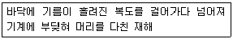
- 재해발생형태 : 전도, 기인물 : 기계, 가해물 : 기름
- 재해발생형태 : 충돌, 기인물 : 기계, 가해물 : 기름
- 재해발생형태 : 전도, 기인물 : 기름, 가해물 : 기계
- 재해발생형태 : 도괴, 기인물 : 기계, 가해물 : 기름
(정답률: 74%)
4. 다음 중 산업안전보건법령상 사업 내 안전 ㆍ 보건교육의 교육과정에 해당하지 않는 것은?
- 특별안전 ㆍ 보건교육
- 근로자 정기안전 ㆍ 보건교육
- 관리감독자 정기안전 ㆍ 보건교육
- 안전관리자 신규 및 보수교육
(정답률: 75%)
5. 다음 설명에 해당하는 교육방법은?
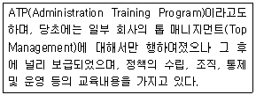
- TWI(Training Within Industry)
- ATT(American Telephone & Telegram Co)
- MTP(Management Training Program)
- CCS(Civil communication Section)
(정답률: 36%)
6. 사고예방대책의 기본원리 5단계 중 분석평가 단계의 활동 내용으로 적절한 것은?
- 안전관리자의 임명
- 안전성 진단 및 평가
- 규정 및 규칙 개선
- 안전활동의 기록 검토
(정답률: 71%)
7. 리더십의 권한 중 목표 달성을 위하여 부하 직원들이 상사를 존경하여 상사와 함께 일하고자 할 때 상사에게 부여되는 권한을 무엇이라 하는가?
- 보상적 권한
- 강압적 권한
- 위임된 권한
- 합법적 권한
(정답률: 66%)
8. 상시근로자 200명인 사업장의 출근율은 90%이고, 1년간 1건의 사망과 4건의 재해로 인하여 연간 200일의 근로손실일이 발생하였다. 이 사업장의 도수율은 약 얼마인가? (단, 근로자는 1일 8시간, 300일 근무하였고, 전체 근로자의 연간 총 잔업시간은 10000시간이었다.)
- 0.011
- 0.013
- 11.31
- 17.42
(정답률: 50%)
9. 다음 중 Herzberg의 2요인론에서 동기요인에 해당하는 것은?
- 책임감
- 감독
- 지위
- 임금
(정답률: 64%)
10. 다음 중 위험예지훈련 4라운드 기법의 진행방법에 있어 문제점 발견 및 중요 문제를 결정하는 단계로 옳은 것은?
- 대책수립 단계
- 현상파악 단계
- 본질추구 단계
- 행동목표설정 단계
(정답률: 60%)
11. 다음 중 재해예방의 4원칙에 해당되지 않는 것은?
- 손실발생의 원칙
- 원인계기의 원칙
- 예방가능의 원칙
- 대책선정의 원칙
(정답률: 68%)
12. 부주의 발생현상 중 질병의 경우에 주로 나타나는 것은?
- 의식의 우회
- 의식의 단절
- 의식의 과잉
- 의식 수준의 저하
(정답률: 50%)
13. 착오의 요인 중 판단과정의 착오에 해당하지 않는 것은?
- 능력부족
- 정보부족
- 감각차단현상
- 자기합리화
(정답률: 31%)
14. 산업안전보건법상 안전보건관리규정을 작성하여야 할 어업은 몇 명 이상의 상시근로자를 사용하는 사업으로 하여야 하는가?
- 500명
- 300명
- 100명
- 50명
(정답률: 58%)
15. 다음 중 재해비용의 계산방식에 있어 하인리히의 계산방식으로 옳은 것은?
- 총 재해비용 = 보험비용 + 비보험비용
- 총 재해비용 = 직접손실비용 + 간접손실비용
- 총 재해비용 = 공동비용 + 개별비용
- 총 재해비용 = 노동손실비용 + 설비손실비용
(정답률: 72%)
16. 다음 중 Off.J.T(Off the Job Training)의 특징이 아닌것은?
- 전문가를 초빙하여 강사로 활용이 가능하다.
- 교육생 간에 많은 지식과 경험을 교류할 수 있다.
- 다수의 교육생에게 조직적 훈련이 가능하다.
- 직장의 실정에 맞는 실질적 훈련이 가능하다.
(정답률: 69%)
17. 다음 중 학습을 자극에 의한 반응으로 보는 이론과 가장 관계가 적은 것은?
- Lewin의 장(場)설
- Pavlov의 조건반사설
- Thorndike의 시행착오설
- Skinner의 도구적 조건화설
(정답률: 50%)
18. 다음 중 사업장내의 물적⋅인적 재해의 잠재 위험성을 사전에 발견하여 그 예방대책을 세우기 위한 안전관리 행위를 무엇이라 하는가?
- 안전진단
- 안전관리 조직
- 풀 프루프(fool proof)
- 페일 세이프(fail safe)
(정답률: 57%)
19. 다음 중 의무안전인증대상 방독마스크의 할로겐용 정화통 외부 측면의 표시색으로 옳은 것은?
- 회색
- 갈색
- 노란색
- 녹색
(정답률: 52%)
20. 다음 중 산업안전보건법령상 안전⋅보건표시의 색채별 색도기준이 올바르게 연결된 것은? (단, 순서는 색상 명도/채도이며, 색도기준은 KS에 다른 색의 3속성에 의한 표시방법에 따른다.)
- 빨간색 – 5R 4/13
- 노란색 – 2.5Y 8/12
- 파란색 – 7.5PB 2.5/7.5
- 녹색 – 2.5G 4/10
(정답률: 66%)
2과목: 인간공학 및 시스템안전공학
21. 다음 중 점광원에 적용할 때 조도를 나타낸 식으로 옳은 것은?
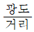
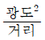
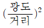
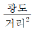
(정답률: 65%)
22. 동전던지기에서 앞면이 나올 확률이 0.7이고, 뒷면이 나올 확률이 0.3일 때, 앞면이 나올 확률의 정보량(A)와 뒷면이 나올 확률의 정보량(B)의 연결이 옳은 것은?
- A : 0.10bit, B : 3.32bit
- A : 0.51bit, B : 1.74bit
- A : 0.10bit, B : 3.52bit
- A : 0.15bit, B : 3.52bit
(정답률: 60%)
23. 모든 시스템 안전 분석에서 제일 첫 번째 단계의 분석으로 시스템 내의 위험요소가 어떤 상태에 있는지를 정성적으로 평가하는 시스템 안전 분석 기법은?
- FTA
- OHA
- PHA
- FHA
(정답률: 61%)
24. FT도의 기호 중 전이기호에 해당하는 것은?
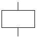
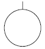
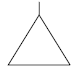
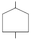
(정답률: 70%)
25. 다음 설명에 해당하는 설비 보전 방식은?
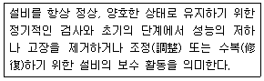
- 예방보전(preventive maintenance)
- 보전예방(maintenance prevention)
- 개량보전(corrective maintenance)
- 사후보전(Break-down maintenance)
(정답률: 58%)
26. 암호체계 사용상의 일반적 지침 중 부호의 양립성(compatibility)에 관한 설명으로 옳은 것은?
- 자극은 주어진 상황하의 감지장치나 사람이 감지할 수 있는 것이어야 한다.
- 암호의 표시는 다른 암호 표시와 구별될 수 있어야 한다.
- 자극과 반응 간의 관계가 인간의 기대와 모순되지 않아야 한다.
- 일반적으로 2가지 이상을 조합하여 사용하면 정보의 전달이 촉진된다.
(정답률: 36%)
27. 다음과 같은 실험 결과는 어느 실험에 의한 것인가?
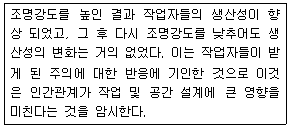
- Heinrich 실험
- Compes 실험
- Birds 실험
- Hawthorne 실험
(정답률: 59%)
28. 다음 중 인간공학의 정의에 관한 설명으로 적절하지 않은 것은?
- 인간공학이란 인간이 사용할 수 있도록 설계하는 과정을 말한다.
- 인간공학의 초점은 인간이 만들어 생활의 여러 국면에서 사용하는 물건, 기구, 혹은 환경을 설계하는 과정에서 기계나 설비를 고려하여 주는데 있다.
- 인간공학의 접근방법은 인간이 만들어 사람이 사용하는 물건, 기구 혹은 환경을 설계하는데 인간의 특성이나 행동에 관한 적절한 정보를 체계적으로 적용하는 것이다.
- 인간공학의 목표는 인간이 만든 물건, 기구, 혹은 환경 등을 잘 사용할 수 있도록 실용적 효능을 높이고, 이러한 과정에서 특정한 인생의 가치 기준을 유지하거나 높이는데 있다.
(정답률: 48%)
29. 다음 중 병렬계의 특성에 관한 설명으로 틀린 것은?
- 요소의 수가 많을수록 고장의 기회가 줄어든다.
- 요소의 어느 하나가 정상이면 계는 정상이다.
- 요소의 중복도가 늘수록 계의 수명은 짧아진다.
- 계의 수명은 요소 중 수명이 가장 긴 것으로 정해진다.
(정답률: 54%)
30. 다음 중 청각적 신호의 수신에 관계되는 인간의 기능으로 볼 수 없는 것은?
- 검출
- 순응
- 위치 판별
- 절대적 식별
(정답률: 47%)
31. FTA에 의한 재해사례연구의 각 단계가 다음과 같을 때 순서를 올바르게 나열한 것은?
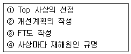
- ① → ④ → ③ → ②
- ③ → ④ → ② → ①
- ④ → ① → ③ → ②
- ④ → ② → ③ → ①
(정답률: 61%)
32. 다음 중 화학설비의 안전성 평가 과정에서 제3단계인 정량적 평가 항목에 해당되는 것은?
- 목록
- 건조물의 도면
- 공정계통도
- 화학설비용량
(정답률: 69%)
33. 중추신경계의 피로(정신 피로)의 척도로 사용할 수 있는 시각적 점멸융합주파수(VFF)를 측정할 때 영향을 주는 변수로 틀린 것은?
- VFF는 조명 강도의 대수치에 선형적으로 반비례한다.
- 표적과 주변의 휘도가 같을 때 VFF는 최대가 된다.
- 휘도만 같다면 색상은 VFF에 영향을 주지 않는다.
- VFF는 사람들 간에는 큰 차이가 있으나 개인의 경우 일관성이 있다.
(정답률: 31%)
34. 다음 중 인간 과오의 분류시스템과 그 확률을 계산함으로써 원래 제품의 결함을 감소시키기 위하여 개발된 기법은?
- THERP
- FMEA
- FHA
- MORT
(정답률: 64%)
35. 성공수(success tree)의 정상사상을 발생시키는 기본사상들의 최소집합을 시스템 신뢰도 측면에서는 무엇이라 하는가?
- cut set
- true set
- path set
- module set
(정답률: 57%)
36. 작업공간에서 부품배치의 원칙에 따라 레이아웃을 개선하려 할 때 다음 중 부품배치의 원칙에 해당하지 않는 것은?
- 사용 빈도의 원칙
- 편리성의 원칙
- 사용 순서의 원칙
- 기능별 배치의 원칙
(정답률: 64%)
37. 체계 설계 과정의 주요 단계가 다음과 같을 때 다음 중 가장 먼저 시행되는 단계는?
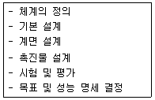
- 체계의 정의
- 기본 설계
- 계면 설계
- 목표 및 성능 명세 결정
(정답률: 69%)
38. 다음 중 열교환(heat exchange)의 경로에 관한 설명으로 틀린 것은?
- 전도(conduction)는 고체나 유체의 직접 접촉에 의한 열전달이다.
- 대류(convection)는 고온의 액체나 기체의 흐름에의한 열전달이다.
- 복사(radiation)는 물체 사이에서 전자파의 복사에의한 열전달이다.
- 증발(evaporation)은 공기 온도가 피부 온도보다 높을 때 발생하는 열전달이다.
(정답률: 52%)
39. 반사율이 80%인 종이에 인쇄된 글자의 반사율이 20%라 하면, 대비는 몇 % 인가?
- 75%
- -33%
- 25%
- -75%
(정답률: 56%)
40. 제어장치의 레버를 2cm 이동시켰더니 표시장치의 지침이 8cm 이동하였다. 이 계기의 통제표시비(C/D)는 얼마인가?
- 0.15
- 0.25
- 0.35
- 0.45
(정답률: 64%)
3과목: 건설시공학
41. 공사도급계약 체결 후 공사의 순서로 옳은 것은?
- 토공사 - 가설공사 - 기초공사 - 방수공사 - 구체공사
- 기초공사 - 가설공사 - 토공사 - 방수공사 - 구체공사
- 가설공사 - 토공사 - 기초공사 - 구체공사 - 방수공사
- 토공사 - 기초공사 - 가설공사 - 구체공사 - 방수공사
(정답률: 42%)
42. 지반을 개량하여 형성되는 지정공사에 사용되는 공법이 아닌 것은?
- 다짐공법
- 압밀공법
- 응결공법
- 어스앵커공법
(정답률: 69%)
43. 철골공사의 용접작업 시 맞댄용접의 앞벌림 모양과 관련이 없는 것은?
- I자형
- U자형
- Z자형
- H자형
(정답률: 67%)
44. 지반개량 공법 중 투수성이 나쁜 점토질 연약지반에 적용하기 어려운 것은?
- 샌드 드레인(Sand drain)공법
- 페이퍼 드레인(Paper drain)공법
- 생석회 말뚝(Chemico Pile) 공법
- 웰 포인트(Well Point) 공법
(정답률: 57%)
45. 로드의 선단에 설치한 +자형 날개를 지반 속에 삽입하고 이것을 회전시켜 점토의 전단강도를 측정하는 시험은?
- 표준관입시험
- 베인시험
- 지내력시험
- 압밀시험
(정답률: 78%)
46. 철골공사 시 앵커볼트 매입공법에 해당하지 않는 것은?
- 고정매입 공법
- 가동매입 공법
- 나중매입 공법
- 중심매입 공법
(정답률: 38%)
47. 콘크리트의 재료로 사용되는 골재에 관한 설명 중 옳지 않은 것은?
- 골재는 견고하고 내구적이며, 유해물질의 함유량이 적어야 한다.
- 골재의 입형은 예각으로 된 것은 좋지 않다.
- 골재의 강도는 경화시멘트페이스트의 강도 이하이어야 한다.
- 골재는 물리적 ㆍ 화학적으로 안정되어야 한다.
(정답률: 64%)
48. 철골부재의 용접에서 용접상부에 따라 모재가 녹아 용착금속이 채워지지 않고 홈으로 남게 된 부분은?
- 오버랩(overlap)
- 언더컷(undercut)
- 블로우홀(blowhole)
- 크랙(crack)
(정답률: 48%)
49. 다음 중 흙막이 벽의 강성이 가장 강한 공법은?
- 슬러리 월(Slurry wall)
- 엄지말뚝 + 토류판공법
- CIP 공법(Cast in Place Pile)
- 널말뚝 공법(Sheet Pile)
(정답률: 62%)
50. 혼화제인 AE제를 콘크리트 비빔할 때 투입했을 경우 콘크리트의 공기량에 대한 설명 중 옳지 않은 것은?
- AE제에 의한 공기량은 기계비빔이 손비빔보다 증가한다.
- AE제에 의한 공기량은 진동을 주면 감소한다.
- AE제에 의한 공기량은 온도가 높아질수록 증가한다.
- AE제에 의한 공기량은 자갈의 입도에는 거의 영향이 없고, 잔골재의 입도에는 영향이 크다.
(정답률: 45%)
51. 다음 중 거푸집 존치기간이 가장 긴 것은?
- 기둥
- 보 옆면
- 벽
- 보 밑면
(정답률: 82%)
52. 다음 중 철근의 가스압접이음에 대한 설명으로 옳지 않은 것은?
- 접합 전에 압접면을 그라인더로 평탄하게 가공해야 한다.
- 이음공법 중 접합강도가 아주 큰 편이며 성분원소의 조직변화가 적다.
- 철근의 항복점 또는 재질이 다른 경우에도 적용가능 하다.
- 이음위치는 인장력이 가장 적은 곳에서 하고 한곳에 집중해서는 안된다.
(정답률: 72%)
53. 토질시험 중 흙의 강도 및 변형계수를 결정하는 시험으로 고무막에 넣은 원통형의 시료를 일정한 측압을 가함과 동시에 수직하중을 서서히 증대시켜 파괴하는 시험은?
- 투수시험
- 삼축압축시험
- 전단시험
- 다지기시험
(정답률: 72%)
54. 건설공사에서 래머(rammer)의 용도는?
- 철근절단
- 철근절곡
- 잡석다짐
- 토사적재
(정답률: 85%)
55. 한중 콘크리트 공사에서 콘크리트의 물시멘트비는 원칙적으로 얼마 이하로 하여야 하는가?
- 25%
- 35%
- 45%
- 60%
(정답률: 73%)
56. 콘크리트 타설 작업의 기본원칙 중 옳은 것은?
- 타설구획 내의 가까운 곳부터 타설한다.
- 타설구획 내의 콘크리트는 휴식시간을 가지면서 타설 한다.
- 낙하높이는 가능한 크게 한다.
- 타설위치에 가까운 곳까지 펌프, 버킷 등으로 운반 하여 타설한다.
(정답률: 79%)
57. 철골공사와 관련된 전반적인 사항에 대한 설명 중 옳은 것은?
- 윙플레이트는 철골기둥과 보를 연결하는데 사용한다.
- 고력볼트의 접합은 마찰접합, 지압접합, 인장접합이 있다.
- 용접의 품질은 용접공의 기능도에 좌우되지는 않는다.
- 내화피복 습식공법은 PC판, ALC판 등을 활용한다.
(정답률: 56%)
58. 거푸집에 작용하는 콘크리트측압에 관한 설명 중 옳지 않은 것은?
- 철근 사용량이 많을수록 측압은 작아진다.
- 온도가 낮을수록 측압은 커진다.
- 콘크리트가 부배합일수록 측압은 작아진다.
- 거푸집 표면이 평활할수록 측압이 커진다.
(정답률: 43%)
59. 철근의 가공에 있어 철근의 단부에 갈고리를 만들지 않아도 되는 것은?
- 스터럽 및 띠철근
- 굴뚝의 철근
- 지중보 돌출부분의 철근
- 원형철근
(정답률: 64%)
60. 다음 중 기둥거푸집의 고정 및 측압 버팀용으로 사용되는 부속재료는?
- 세퍼레이터
- 컬럼밴드
- 스페이서
- 잭 서포트
(정답률: 65%)
4과목: 건설재료학
61. 금속부식을 최소화하기 위한 방법에 대한 설명 중 옳지 않은 것은?
- 가능한 한 이종 금속을 인접 또는 접촉시키지 않는다.
- 큰 변형을 준 것은 가능한 한 담금질을 하여 사용한다.
- 표면을 평활하고 깨끗이 하며 가능한 한 건조 상태를 유지한다.
- 부분적으로 녹이 나면 즉시 제거한다.
(정답률: 76%)
62. 창호 철물로서 도어체크를 달 수 있는 문은?
- 미닫이문
- 여닫이문
- 접이문
- 미서기문
(정답률: 67%)
63. 고로시멘트는 포틀랜드 시멘트 클링커에 어떤 물질을 첨가한 것인가?
- 고로슬래그
- 플라이애쉬
- 포졸란
- 알루미나
(정답률: 62%)
64. 극장 및 영화관 등의 실내천장 또는 내벽에 붙여 음향 조절 및 장식효과를 겸하는 재료는?
- 플로링 보드
- 파티클 보드
- 집성 목재
- 코펜하겐 리브
(정답률: 80%)
65. 다음 재료 중 비강도(比强度)가 가장 높은 것은?
- 목재
- 콘크리트
- 강재
- 석재
(정답률: 75%)
66. 콘크리트의 시공연도 시험방법이 아닌 것은?
- 비카트 침 시험(vicat test)
- 비비 시험(vee bee test)
- 플로우 시험(flow test)
- 슬럼프 시험(slump test)
(정답률: 50%)
67. 목재를 건조시키는 목적에 해당되지 않은 것은?
- 목재의 자중을 가볍게 한다.
- 부패나 충해를 방지한다.
- 변형을 증가시킨다.
- 도장을 용이하게 한다.
(정답률: 76%)
68. 다음 골재 중 경량골재에 해당되는 것은?
- 자철광
- 중정석
- 팽창혈암
- 갈철광
(정답률: 46%)
69. 건축용 소성 점토벽돌의 색채에 영향을 주는 주요한 요인이 아닌 것은?
- 철화합물
- 망간화합물
- 소성온도
- 산화나트륨
(정답률: 54%)
70. 다음 중 대기 중의 이산화탄소와 반응하여 경화하는 기경성 미장재료는?
- 돌로마이트 플라스터
- 시멘트 모르타르
- 순석고 플라스터
- 혼합석고 플라스터
(정답률: 76%)
71. 시멘트에 대한 일반적인 내용으로 옳지 않은 것은?
- 시멘트의 수화반응에서 경화 이후의 과정을 응결이라 한다.
- 시멘트의 분말도가 클수록 수화작용이 빠르다.
- 시멘트가 풍화되면 수화열이 감소된다.
- 시멘트는 풍화되면 비중이 작아진다.
(정답률: 38%)
72. 콘크리트의 건조수축시 발생하는 균열을 보완, 개선하기 위하여 콘크리트 속에 다량의 거품을 넣거나 기포를 발생시키기 위해 첨가하는 혼화재는?
- 고로슬래그
- 플라이애쉬
- 팽창재
- 실리카 흄
(정답률: 71%)
73. 유리 내부에 금속망을 삽입하고 압착 성형한 판유리로써 깨어지는 경우에도 파편이 튀지 않고 연소도 방지할 수 있는 것은?
- 망입유리
- 물유리
- 복층유리
- 로이유리
(정답률: 80%)
74. 다음 중 매스콘크리트용으로 가장 적합하지 않은 시멘트는?
- 조강포틀랜드시멘트
- 중용열포틀랜드시멘트
- 고로시멘트
- 플라이애시시멘트
(정답률: 56%)
75. 인조석이나 테라조 바름에 쓰이는 종석이 아닌 것은?
- 화강석
- 사문암
- 대리석
- 샤모트
(정답률: 58%)
76. 단열재의 선정조건 중 옳지 않은 것은?
- 비중이 작을 것
- 투기성이 클 것
- 흡수율이 낮을 것
- 열전도율이 낮을 것
(정답률: 67%)
77. 플라스틱재료의 일반적인 성질에 대한 설명 중 옳은 것은?
- 산이나 알칼리, 염류 등에 대한 저항성이 강재보다 약하다.
- 전기저항성이 불량하여 절연재료로 사용할 수 없다.
- 내수성 및 내투습성이 좋지 않아 방수피막제 등으로 사용이 불가능하다.
- 상호간 계면 접착이 잘되며 금속, 콘크리트, 목재, 유리 등 다른 재료에도 잘 부착된다.
(정답률: 67%)
78. 미장재료의 종류와 특성에 대한 설명 중 옳지 않은 것은?
- 시멘트 모르타르는 시멘트를 결합재로 하고 모래를 골재로 하여 이를 물과 혼합하여 사용하는 수경성 미장재료이다.
- 테라조 현장바름은 주로 바닥에 쓰이고 벽에는 공장제품 테라조판을 붙인다.
- 소석회는 돌로마이트 플라스터에 비해 점성이 높고, 작업성이 좋기 때문에 풀을 필요로 하지 않는다.
- 석고플라스터는 경화 ㆍ 건조시 치수안정성이 우수 하며 내화성이 높다.
(정답률: 60%)
79. 비철금속 재료 중 알루미늄에 대한 설명으로 옳지 않은 것은?
- 전기와 열의 양도체이다.
- 알칼리에 침식된다.
- 융점은 640 ~ 660℃ 정도이다.
- 열에 의한 팽창계수는 콘크리트와 유사하다.
(정답률: 65%)
80. 석회암이 변화되어 결정화한 것으로 치밀, 견고하고 색채와 반점이 아름다우며 갈면 광택이나 실내장식재와 조각재로 사용되는 석재는?
- 응회암
- 사암
- 사문암
- 대리석
(정답률: 74%)
5과목: 건설안전기술
81. 점착성이 있는 흙의 함수량을 변화시킬 때 액성, 소성, 반고체, 고체의 상태로 변화하는 흙의 성질을 무엇이라 하는가?
- 간극비
- 연경도
- 예민비
- 포화도
(정답률: 42%)
82. 달비계의 최대 적재하중에 관한 규정 중 달기 체인 및 달기훅의 안전계수 기준은?
- 3 이상
- 5 이상
- 7 이상
- 10 이상
(정답률: 68%)
83. 다음 중 굴착기의 전부장치에 속하지 않는 것은?
- 붐(Boom)
- 마스트(Mast)
- 암(Arm)
- 버킷(Bucket)
(정답률: 57%)
84. 통나무 비계를 조립하는 경우에 준수하여야 하는 사항으로 옳지 않은 것은?
- 비계 기둥의 이음이 겹침 이음인 경우에는 이음 부분에서 1m 이상을 서로 겹쳐서 두 군데 이상을 묶을 것
- 교차 가새로 보강할 것
- 비계기둥의 간격은 3.5m 이하로 할 것
- 통나무 비계는 지상높이 4층 이하 또는 12m 이하인 건축물 ㆍ 공작물 등의 건조 ㆍ 해체 및 조립 등의 작업에만 사용하도록 할 것
(정답률: 48%)
85. 다음의 ( )안에 알맞은 수치는?
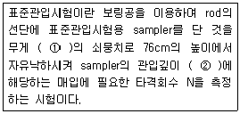
- ①-53.5kg, ②-30cm
- ①-53.5kg, ②-40cm
- ①-63.5kg, ②-30cm
- ①-63.5kg, ②-40cm
(정답률: 70%)
86. 건물외부에 낙하물 방지망을 설치할 경우 벽면으로부터 돌출되는 거리의 기준은?
- 1m 이상
- 1.5m 이상
- 1.8m 이상
- 2m 이상
(정답률: 64%)
87. 철골공사의 용접, 용단작업에 사용되는 가스의 용기는 최대 몇 ℃ 이하로 보존해야 하는가?
- 25℃
- 36℃
- 40℃
- 48℃
(정답률: 60%)
88. 가설통로의 설치 기준으로 옳지 않은 것은?
- 건설공사에 사용하는 높이 8m 이상인 비계다리에는 7m 이내마다 계단참을 설치할 것
- 경사는 30° 이하로 할 것
- 수직갱에 가설된 통로의 길이가 15m 이상인 때에는 5m 이내마다 계단참을 설치할 것
- 경사가 15° 를 초과하는 경우에는 미끄러지지 아니하는 구조로 할 것
(정답률: 63%)
89. 다음은 고소작업대를 설치하는 경우에 대한 내용이다. ( )안에 알맞은 숫자는?
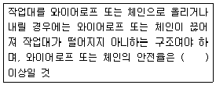
- 5
- 7
- 8
- 10
(정답률: 52%)
90. 사다리식 통로의 설치기준으로 옳지 않은 것은?
- 견고한 구조로 할 것
- 심한 손상 ㆍ 부식 등이 없는 재료를 사용할 것
- 발판의 간격은 일정하게 할 것
- 폭은 60cm 이내로 할 것
(정답률: 72%)
91. 갈퀴형태의 배토판을 부착한 건설장비로서 나무뿌리 제거용이나 지상청소에 사용하는데 적합한 불도저는?
- 스트레이트 도저
- 틸트도저
- 레이크도저
- 앵글도저
(정답률: 38%)
92. 다음 중 시스템 비계를 사용하여 비계를 구성하는 경우에 준수하여야 할 사항으로 옳지 않은 것은?
- 수직재 ㆍ 수평재 ㆍ 가새재를 견고하게 연결하는 구조가 되도록 할 것
- 비계 밑단의 수직재와 받침철물은 밀착되도록 설치하고, 수직재와 받침철물의 연결부의 겹침길이는 받침 철물 전체길이의 4분의 1 이상이 되도록 할 것
- 수평재는 수직재와 직각으로 설치하여야 하며, 체결후 흔들림이 없도록 견고하게 설치할 것
- 수직재와 수직재의 연결철물은 이탈되지 않도록 견고한 구조로 할 것
(정답률: 70%)
93. 콘크리트 타설작업을 하는 경우의 준수사항으로 옳지 않은 것은?
- 콘크리트 타설작업 중 이상이 있으면 작업을 중지하고 근로자를 대피시킬 것
- 콘크리트를 타설하는 경우에는 편심을 유발하여 콘크리트를 거푸집 내에 밀실하게 채울 것
- 설계도서상의 콘크리트 양생기간을 준수하여 거푸집동바리 등을 해체할 것
- 콘크리트 타설작업 시 거푸집 붕괴의 위험이 발생할 우려가 있으면 충분한 보강조치를 할 것
(정답률: 76%)
94. 철골작업을 중지하여야 하는 강설량 기준은?
- 1mm/시간 이상
- 3mm/시간 이상
- 1cm/시간 이상
- 3cm/시간 이상
(정답률: 64%)
95. 다음 중 위험물질을 제조 ㆍ 취급하는 작업장과 그 작업장이 있는 건축물에서의 비상구설치 관련기준으로 옳지 않은 것은?
- 출입구와 같은 방향에 있지 아니하고, 출입구로부터 2m 이상 떨어져 있을 것
- 작업장의 각 부분으로부터 하나의 비상구 또는 출입구까지의 수평거리가 50m 이하가 되도록 할 것
- 비상구의 너비는 0.75m 이상으로 하고, 높이는 1.5m 이상으로 할 것
- 비상구의 문은 피난방향으로 열리도록 하고, 실내에서 항상 열 수 있는 구조로 할 것
(정답률: 41%)
96. 수중굴착 및 구조물의 기초바닥 등과 같은 협소하고 상당히 깊은 범위의 굴착과 호퍼작업에 가장 적당한 굴착기계는?
- 파워셔블
- 항타기
- 클램쉘
- 리버스큘레이션드릴
(정답률: 73%)
97. 강관비계의 비계기둥간의 적재하중은 얼마를 초과하지 않도록 하여야 하는가?
- 300kg
- 400kg
- 500kg
- 600kg
(정답률: 64%)
98. 그림과 같이 무게 500kg의 화물을 인양하려고 한다. 이때 와이어로프 하나에 작용되는 장력(T)은 약 얼마인가?
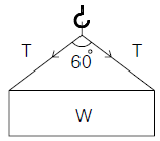
- 500kg
- 357kg
- 289kg
- 144kg
(정답률: 41%)
99. 다음 중 점성토지반의 개량공법에 해당되지 않는 것은?
- 샌드 드레인공법
- 페이퍼 드레인공법
- 생석회 말뚝공법
- 바이브로 플로테이션공법
(정답률: 61%)
100. 토사붕괴를 방지하기 위한 대책으로 붕괴방지공법에 해당되지 않는 것은?
- 배토공법
- 압성토공법
- 집수정공법
- 공작물의 설치
(정답률: 55%)
스트레스는 일상에서 불가피하게 발생하는 것이며, 어떤 상황에서도 발생 가능하다. 그러나 스트레스가 지속되면 직무몰입과 생산성 감소를 초래할 수 있다. 따라서 스트레스 관리는 개인의 건강과 직무 성과에 중요한 역할을 한다.